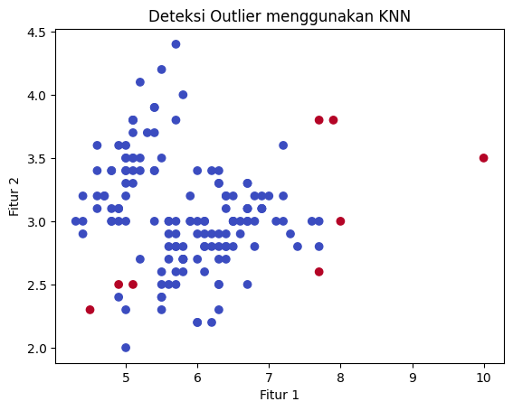

<!DOCTYPE html>


<html lang="en" data-content_root="./" >

  <head>
    <meta charset="utf-8" />
    <meta name="viewport" content="width=device-width, initial-scale=1.0" /><meta name="viewport" content="width=device-width, initial-scale=1" />

    <title>Tipe Data Understanding &amp; Deteksi Outlier Menggunakan KNN &#8212; Penambangan Data</title>
  
  
  
  <script data-cfasync="false">
    document.documentElement.dataset.mode = localStorage.getItem("mode") || "";
    document.documentElement.dataset.theme = localStorage.getItem("theme") || "";
  </script>
  
  <!-- Loaded before other Sphinx assets -->
  <link href="_static/styles/theme.css?digest=dfe6caa3a7d634c4db9b" rel="stylesheet" />
<link href="_static/styles/bootstrap.css?digest=dfe6caa3a7d634c4db9b" rel="stylesheet" />
<link href="_static/styles/pydata-sphinx-theme.css?digest=dfe6caa3a7d634c4db9b" rel="stylesheet" />

  
  <link href="_static/vendor/fontawesome/6.5.2/css/all.min.css?digest=dfe6caa3a7d634c4db9b" rel="stylesheet" />
  <link rel="preload" as="font" type="font/woff2" crossorigin href="_static/vendor/fontawesome/6.5.2/webfonts/fa-solid-900.woff2" />
<link rel="preload" as="font" type="font/woff2" crossorigin href="_static/vendor/fontawesome/6.5.2/webfonts/fa-brands-400.woff2" />
<link rel="preload" as="font" type="font/woff2" crossorigin href="_static/vendor/fontawesome/6.5.2/webfonts/fa-regular-400.woff2" />

    <link rel="stylesheet" type="text/css" href="_static/pygments.css?v=03e43079" />
    <link rel="stylesheet" type="text/css" href="_static/styles/sphinx-book-theme.css?v=eba8b062" />
    <link rel="stylesheet" type="text/css" href="_static/togglebutton.css?v=13237357" />
    <link rel="stylesheet" type="text/css" href="_static/copybutton.css?v=76b2166b" />
    <link rel="stylesheet" type="text/css" href="_static/mystnb.4510f1fc1dee50b3e5859aac5469c37c29e427902b24a333a5f9fcb2f0b3ac41.css" />
    <link rel="stylesheet" type="text/css" href="_static/sphinx-thebe.css?v=4fa983c6" />
    <link rel="stylesheet" type="text/css" href="_static/sphinx-design.min.css?v=95c83b7e" />
  
  <!-- Pre-loaded scripts that we'll load fully later -->
  <link rel="preload" as="script" href="_static/scripts/bootstrap.js?digest=dfe6caa3a7d634c4db9b" />
<link rel="preload" as="script" href="_static/scripts/pydata-sphinx-theme.js?digest=dfe6caa3a7d634c4db9b" />
  <script src="_static/vendor/fontawesome/6.5.2/js/all.min.js?digest=dfe6caa3a7d634c4db9b"></script>

    <script src="_static/documentation_options.js?v=9eb32ce0"></script>
    <script src="_static/doctools.js?v=9a2dae69"></script>
    <script src="_static/sphinx_highlight.js?v=dc90522c"></script>
    <script src="_static/clipboard.min.js?v=a7894cd8"></script>
    <script src="_static/copybutton.js?v=f281be69"></script>
    <script src="_static/scripts/sphinx-book-theme.js?v=887ef09a"></script>
    <script>let toggleHintShow = 'Click to show';</script>
    <script>let toggleHintHide = 'Click to hide';</script>
    <script>let toggleOpenOnPrint = 'true';</script>
    <script src="_static/togglebutton.js?v=4a39c7ea"></script>
    <script>var togglebuttonSelector = '.toggle, .admonition.dropdown';</script>
    <script src="_static/design-tabs.js?v=f930bc37"></script>
    <script>const THEBE_JS_URL = "https://unpkg.com/thebe@0.8.2/lib/index.js"; const thebe_selector = ".thebe,.cell"; const thebe_selector_input = "pre"; const thebe_selector_output = ".output, .cell_output"</script>
    <script async="async" src="_static/sphinx-thebe.js?v=c100c467"></script>
    <script>var togglebuttonSelector = '.toggle, .admonition.dropdown';</script>
    <script>const THEBE_JS_URL = "https://unpkg.com/thebe@0.8.2/lib/index.js"; const thebe_selector = ".thebe,.cell"; const thebe_selector_input = "pre"; const thebe_selector_output = ".output, .cell_output"</script>
    <script>DOCUMENTATION_OPTIONS.pagename = '2_Tipe_Data';</script>
    <link rel="index" title="Index" href="genindex.html" />
    <link rel="search" title="Search" href="search.html" />
    <link rel="next" title="Local Outlier Factor (LOF)" href="LOF.html" />
    <link rel="prev" title="Memahami Data" href="Data_Understanding.html" />
  <meta name="viewport" content="width=device-width, initial-scale=1"/>
  <meta name="docsearch:language" content="en"/>
  </head>
  
  
  <body data-bs-spy="scroll" data-bs-target=".bd-toc-nav" data-offset="180" data-bs-root-margin="0px 0px -60%" data-default-mode="">

  
  
  <div id="pst-skip-link" class="skip-link d-print-none"><a href="#main-content">Skip to main content</a></div>
  
  <div id="pst-scroll-pixel-helper"></div>
  
  <button type="button" class="btn rounded-pill" id="pst-back-to-top">
    <i class="fa-solid fa-arrow-up"></i>Back to top</button>

  
  <input type="checkbox"
          class="sidebar-toggle"
          id="pst-primary-sidebar-checkbox"/>
  <label class="overlay overlay-primary" for="pst-primary-sidebar-checkbox"></label>
  
  <input type="checkbox"
          class="sidebar-toggle"
          id="pst-secondary-sidebar-checkbox"/>
  <label class="overlay overlay-secondary" for="pst-secondary-sidebar-checkbox"></label>
  
  <div class="search-button__wrapper">
    <div class="search-button__overlay"></div>
    <div class="search-button__search-container">
<form class="bd-search d-flex align-items-center"
      action="search.html"
      method="get">
  <i class="fa-solid fa-magnifying-glass"></i>
  <input type="search"
         class="form-control"
         name="q"
         id="search-input"
         placeholder="Search this book..."
         aria-label="Search this book..."
         autocomplete="off"
         autocorrect="off"
         autocapitalize="off"
         spellcheck="false"/>
  <span class="search-button__kbd-shortcut"><kbd class="kbd-shortcut__modifier">Ctrl</kbd>+<kbd>K</kbd></span>
</form></div>
  </div>

  <div class="pst-async-banner-revealer d-none">
  <aside id="bd-header-version-warning" class="d-none d-print-none" aria-label="Version warning"></aside>
</div>

  
    <header class="bd-header navbar navbar-expand-lg bd-navbar d-print-none">
    </header>
  

  <div class="bd-container">
    <div class="bd-container__inner bd-page-width">
      
      
      
      <div class="bd-sidebar-primary bd-sidebar">
        

  
  <div class="sidebar-header-items sidebar-primary__section">
    
    
    
    
  </div>
  
    <div class="sidebar-primary-items__start sidebar-primary__section">
        <div class="sidebar-primary-item">

  
    
  

<a class="navbar-brand logo" href="intro.html">
  
  
  
  
  
    
    
      
    
    
    
    <script>document.write(``);</script>
  
  
</a></div>
        <div class="sidebar-primary-item">

 <script>
 document.write(`
   <button class="btn search-button-field search-button__button" title="Search" aria-label="Search" data-bs-placement="bottom" data-bs-toggle="tooltip">
    <i class="fa-solid fa-magnifying-glass"></i>
    <span class="search-button__default-text">Search</span>
    <span class="search-button__kbd-shortcut"><kbd class="kbd-shortcut__modifier">Ctrl</kbd>+<kbd class="kbd-shortcut__modifier">K</kbd></span>
   </button>
 `);
 </script></div>
        <div class="sidebar-primary-item"><nav class="bd-links bd-docs-nav" aria-label="Main">
    <div class="bd-toc-item navbar-nav active">
        
        <ul class="nav bd-sidenav bd-sidenav__home-link">
            <li class="toctree-l1">
                <a class="reference internal" href="intro.html">
                    Intro
                </a>
            </li>
        </ul>
        <ul class="current nav bd-sidenav">
<li class="toctree-l1"><a class="reference internal" href="About_Me.html">About Me</a></li>
<li class="toctree-l1"><a class="reference internal" href="Data_Understanding.html">Memahami Data</a></li>
<li class="toctree-l1 current active"><a class="current reference internal" href="#"><em><strong>Tipe Data Understanding &amp; Deteksi Outlier Menggunakan KNN</strong></em></a></li>
<li class="toctree-l1"><a class="reference internal" href="LOF.html">Local Outlier Factor (LOF)</a></li>
<li class="toctree-l1"><a class="reference internal" href="Naive_Bayes.html">Naive Bayes</a></li>
<li class="toctree-l1"><a class="reference internal" href="K_Means.html">K-Means Clustering Iris Data</a></li>
<li class="toctree-l1"><a class="reference internal" href="DecisionTreeClassifier.html"><strong>Decision Tree Classifier</strong></a></li>
</ul>

    </div>
</nav></div>
    </div>
  
  
  <div class="sidebar-primary-items__end sidebar-primary__section">
  </div>
  
  <div id="rtd-footer-container"></div>


      </div>
      
      <main id="main-content" class="bd-main" role="main">
        
        

<div class="sbt-scroll-pixel-helper"></div>

          <div class="bd-content">
            <div class="bd-article-container">
              
              <div class="bd-header-article d-print-none">
<div class="header-article-items header-article__inner">
  
    <div class="header-article-items__start">
      
        <div class="header-article-item"><button class="sidebar-toggle primary-toggle btn btn-sm" title="Toggle primary sidebar" data-bs-placement="bottom" data-bs-toggle="tooltip">
  <span class="fa-solid fa-bars"></span>
</button></div>
      
    </div>
  
  
    <div class="header-article-items__end">
      
        <div class="header-article-item">

<div class="article-header-buttons">


<div class="dropdown dropdown-source-buttons">
  <button class="btn dropdown-toggle" type="button" data-bs-toggle="dropdown" aria-expanded="false" aria-label="Source repositories">
    <i class="fab fa-github"></i>
  </button>
  <ul class="dropdown-menu">
      
      
      
      <li><a href="https://github.com/executablebooks/jupyter-book" target="_blank"
   class="btn btn-sm btn-source-repository-button dropdown-item"
   title="Source repository"
   data-bs-placement="left" data-bs-toggle="tooltip"
>
  

<span class="btn__icon-container">
  <i class="fab fa-github"></i>
  </span>
<span class="btn__text-container">Repository</span>
</a>
</li>
      
      
      
      
      <li><a href="https://github.com/executablebooks/jupyter-book/issues/new?title=Issue%20on%20page%20%2F2_Tipe_Data.html&body=Your%20issue%20content%20here." target="_blank"
   class="btn btn-sm btn-source-issues-button dropdown-item"
   title="Open an issue"
   data-bs-placement="left" data-bs-toggle="tooltip"
>
  

<span class="btn__icon-container">
  <i class="fas fa-lightbulb"></i>
  </span>
<span class="btn__text-container">Open issue</span>
</a>
</li>
      
  </ul>
</div>


<div class="dropdown dropdown-download-buttons">
  <button class="btn dropdown-toggle" type="button" data-bs-toggle="dropdown" aria-expanded="false" aria-label="Download this page">
    <i class="fas fa-download"></i>
  </button>
  <ul class="dropdown-menu">
      
      
      
      <li><a href="_sources/2_Tipe_Data.ipynb" target="_blank"
   class="btn btn-sm btn-download-source-button dropdown-item"
   title="Download source file"
   data-bs-placement="left" data-bs-toggle="tooltip"
>
  

<span class="btn__icon-container">
  <i class="fas fa-file"></i>
  </span>
<span class="btn__text-container">.ipynb</span>
</a>
</li>
      
      
      
      
      <li>
<button onclick="window.print()"
  class="btn btn-sm btn-download-pdf-button dropdown-item"
  title="Print to PDF"
  data-bs-placement="left" data-bs-toggle="tooltip"
>
  

<span class="btn__icon-container">
  <i class="fas fa-file-pdf"></i>
  </span>
<span class="btn__text-container">.pdf</span>
</button>
</li>
      
  </ul>
</div>


<button onclick="toggleFullScreen()"
  class="btn btn-sm btn-fullscreen-button"
  title="Fullscreen mode"
  data-bs-placement="bottom" data-bs-toggle="tooltip"
>
  

<span class="btn__icon-container">
  <i class="fas fa-expand"></i>
  </span>

</button>


<script>
document.write(`
  <button class="btn btn-sm nav-link pst-navbar-icon theme-switch-button" title="light/dark" aria-label="light/dark" data-bs-placement="bottom" data-bs-toggle="tooltip">
    <i class="theme-switch fa-solid fa-sun fa-lg" data-mode="light"></i>
    <i class="theme-switch fa-solid fa-moon fa-lg" data-mode="dark"></i>
    <i class="theme-switch fa-solid fa-circle-half-stroke fa-lg" data-mode="auto"></i>
  </button>
`);
</script>


<script>
document.write(`
  <button class="btn btn-sm pst-navbar-icon search-button search-button__button" title="Search" aria-label="Search" data-bs-placement="bottom" data-bs-toggle="tooltip">
    <i class="fa-solid fa-magnifying-glass fa-lg"></i>
  </button>
`);
</script>
<button class="sidebar-toggle secondary-toggle btn btn-sm" title="Toggle secondary sidebar" data-bs-placement="bottom" data-bs-toggle="tooltip">
    <span class="fa-solid fa-list"></span>
</button>
</div></div>
      
    </div>
  
</div>
</div>
              
              

<div id="jb-print-docs-body" class="onlyprint">
    <h1>Tipe Data Understanding & Deteksi Outlier Menggunakan KNN</h1>
    <!-- Table of contents -->
    <div id="print-main-content">
        <div id="jb-print-toc">
            
            <div>
                <h2> Contents </h2>
            </div>
            <nav aria-label="Page">
                <ul class="visible nav section-nav flex-column">
<li class="toc-h2 nav-item toc-entry"><a class="reference internal nav-link" href="#data-understanding-dan-jenis-jenis-data">Data Understanding dan Jenis-Jenis Data</a></li>
<li class="toc-h2 nav-item toc-entry"><a class="reference internal nav-link" href="#deteksi-outlier-dengan-knn-k-nearest-neighbors-menggunakan-data-iris-yang-sudah-diubah">Deteksi Outlier dengan KNN (K-Nearest Neighbors) menggunakan Data Iris yang Sudah Diubah</a><ul class="nav section-nav flex-column">
<li class="toc-h3 nav-item toc-entry"><a class="reference internal nav-link" href="#konsep-dasar-knn-untuk-deteksi-outlier">Konsep Dasar KNN untuk Deteksi Outlier:</a></li>
<li class="toc-h3 nav-item toc-entry"><a class="reference internal nav-link" href="#langkah-langkah-deteksi-outlier-dengan-knn">Langkah-langkah Deteksi Outlier dengan KNN:</a></li>
<li class="toc-h3 nav-item toc-entry"><a class="reference internal nav-link" href="#penjelasan">Penjelasan:</a></li>
</ul>
</li>
</ul>
            </nav>
        </div>
    </div>
</div>

              
                
<div id="searchbox"></div>
                <article class="bd-article">
                  
  <section class="tex2jax_ignore mathjax_ignore" id="tipe-data-understanding-deteksi-outlier-menggunakan-knn">
<h1><em><strong>Tipe Data Understanding &amp; Deteksi Outlier Menggunakan KNN</strong></em><a class="headerlink" href="#tipe-data-understanding-deteksi-outlier-menggunakan-knn" title="Link to this heading">#</a></h1>
<p>Sebelum memasuki materi selanjutnya, berikut akan ditampilkan hasil setelah data IRIS diubah.</p>
<div class="cell docutils container">
<div class="cell_input docutils container">
<div class="highlight-ipython3 notranslate"><div class="highlight"><pre><span></span><span class="o">!</span>pip<span class="w"> </span>install<span class="w"> </span>mysql-connector-python<span class="w"> </span>psycopg2

<span class="kn">import</span><span class="w"> </span><span class="nn">mysql.connector</span>

<span class="c1"># Koneksi ke MySQL</span>
<span class="n">mysql_conn</span> <span class="o">=</span> <span class="n">mysql</span><span class="o">.</span><span class="n">connector</span><span class="o">.</span><span class="n">connect</span><span class="p">(</span>
    <span class="n">host</span><span class="o">=</span><span class="s2">&quot;irismysql-2739-irismysql-2739.l.aivencloud.com&quot;</span><span class="p">,</span>  <span class="c1"># Ganti dengan host MySQL Anda</span>
    <span class="n">user</span><span class="o">=</span><span class="s2">&quot;avnadmin&quot;</span><span class="p">,</span>       <span class="c1"># Ganti dengan username Anda</span>
    <span class="n">password</span><span class="o">=</span><span class="s2">&quot;AVNS_dO1A9DrK7DsaNfwz8pv&quot;</span><span class="p">,</span> <span class="c1"># Ganti dengan password Anda</span>
    <span class="n">database</span><span class="o">=</span><span class="s2">&quot;irismysql-2739&quot;</span><span class="p">,</span>  <span class="c1"># Ganti dengan nama database MySQL Anda</span>
    <span class="n">port</span><span class="o">=</span><span class="mi">19667</span><span class="p">,</span>  <span class="c1"># Tentukan port yang diinginkan (19667)</span>
<span class="p">)</span>

<span class="c1"># Membuat cursor</span>
<span class="n">mysql_cursor</span> <span class="o">=</span> <span class="n">mysql_conn</span><span class="o">.</span><span class="n">cursor</span><span class="p">()</span>

<span class="c1"># Mengambil data dari MySQL</span>
<span class="n">mysql_query</span> <span class="o">=</span> <span class="s2">&quot;SELECT * FROM irismysql_2739&quot;</span>  <span class="c1"># Ganti dengan query Anda</span>
<span class="n">mysql_cursor</span><span class="o">.</span><span class="n">execute</span><span class="p">(</span><span class="n">mysql_query</span><span class="p">)</span>
<span class="n">mysql_data</span> <span class="o">=</span> <span class="n">mysql_cursor</span><span class="o">.</span><span class="n">fetchall</span><span class="p">()</span>
<span class="nb">print</span><span class="p">(</span><span class="s2">&quot;Data mysql: &quot;</span><span class="p">,</span> <span class="n">mysql_data</span><span class="p">)</span>

<span class="kn">import</span><span class="w"> </span><span class="nn">psycopg2</span>

<span class="c1"># Koneksi ke PostgreSQL</span>
<span class="n">postgres_conn</span> <span class="o">=</span> <span class="n">psycopg2</span><span class="o">.</span><span class="n">connect</span><span class="p">(</span>
    <span class="n">host</span><span class="o">=</span><span class="s2">&quot;irispostgresql-2739-irispostgresql-2739.l.aivencloud.com&quot;</span><span class="p">,</span>  <span class="c1"># Ganti dengan host PostgreSQL Anda</span>
    <span class="n">database</span><span class="o">=</span><span class="s2">&quot;defaultdb&quot;</span><span class="p">,</span>  <span class="c1"># Ganti dengan nama database PostgreSQL Anda</span>
    <span class="n">user</span><span class="o">=</span><span class="s2">&quot;avnadmin&quot;</span><span class="p">,</span>  <span class="c1"># Ganti dengan username Anda</span>
    <span class="n">password</span><span class="o">=</span><span class="s2">&quot;AVNS_VpqImPpZAlNzgDMQvOp&quot;</span><span class="p">,</span>  <span class="c1"># Ganti dengan password Anda</span>
    <span class="n">port</span><span class="o">=</span><span class="mi">15320</span>  <span class="c1"># Tentukan port yang diinginkan (15320)</span>
<span class="p">)</span>

<span class="c1"># Membuat cursor</span>
<span class="n">postgres_cursor</span> <span class="o">=</span> <span class="n">postgres_conn</span><span class="o">.</span><span class="n">cursor</span><span class="p">()</span>

<span class="c1"># Mengambil data dari PostgreSQL</span>
<span class="n">postgres_query</span> <span class="o">=</span> <span class="s2">&quot;SELECT * FROM </span><span class="se">\&quot;</span><span class="s2">irispostgresql-2739</span><span class="se">\&quot;</span><span class="s2">.irispostgresql&quot;</span>  <span class="c1"># Ganti dengan query Anda</span>
<span class="n">postgres_cursor</span><span class="o">.</span><span class="n">execute</span><span class="p">(</span><span class="n">postgres_query</span><span class="p">)</span>
<span class="n">postgres_data</span> <span class="o">=</span> <span class="n">postgres_cursor</span><span class="o">.</span><span class="n">fetchall</span><span class="p">()</span>
<span class="nb">print</span><span class="p">(</span><span class="s2">&quot;Data postgress: &quot;</span><span class="p">,</span> <span class="n">postgres_data</span><span class="p">)</span>

<span class="kn">import</span><span class="w"> </span><span class="nn">pandas</span><span class="w"> </span><span class="k">as</span><span class="w"> </span><span class="nn">pd</span>

<span class="c1"># Mengonversi ke DataFrame Pandas</span>
<span class="n">mysql_df</span> <span class="o">=</span> <span class="n">pd</span><span class="o">.</span><span class="n">DataFrame</span><span class="p">(</span><span class="n">mysql_data</span><span class="p">,</span> <span class="n">columns</span><span class="o">=</span><span class="p">[</span><span class="n">desc</span><span class="p">[</span><span class="mi">0</span><span class="p">]</span> <span class="k">for</span> <span class="n">desc</span> <span class="ow">in</span> <span class="n">mysql_cursor</span><span class="o">.</span><span class="n">description</span><span class="p">])</span>
<span class="n">postgres_df</span> <span class="o">=</span> <span class="n">pd</span><span class="o">.</span><span class="n">DataFrame</span><span class="p">(</span><span class="n">postgres_data</span><span class="p">,</span> <span class="n">columns</span><span class="o">=</span><span class="p">[</span><span class="n">desc</span><span class="p">[</span><span class="mi">0</span><span class="p">]</span> <span class="k">for</span> <span class="n">desc</span> <span class="ow">in</span> <span class="n">postgres_cursor</span><span class="o">.</span><span class="n">description</span><span class="p">])</span>

<span class="c1"># Menggabungkan kedua DataFrame</span>
<span class="n">combined_df</span> <span class="o">=</span> <span class="n">pd</span><span class="o">.</span><span class="n">concat</span><span class="p">([</span><span class="n">mysql_df</span><span class="p">,</span> <span class="n">postgres_df</span><span class="p">],</span> <span class="n">ignore_index</span><span class="o">=</span><span class="kc">True</span><span class="p">)</span>

<span class="c1"># Menggabungkan berdasarkan kolom tertentu</span>
<span class="n">combined_df</span> <span class="o">=</span> <span class="n">pd</span><span class="o">.</span><span class="n">merge</span><span class="p">(</span><span class="n">mysql_df</span><span class="p">,</span> <span class="n">postgres_df</span><span class="p">,</span> <span class="n">on</span><span class="o">=</span><span class="p">[</span><span class="s2">&quot;id&quot;</span><span class="p">,</span> <span class="s2">&quot;Class&quot;</span><span class="p">],</span> <span class="n">how</span><span class="o">=</span><span class="s2">&quot;outer&quot;</span><span class="p">)</span>  <span class="c1"># Ganti &quot;id&quot; dengan kolom yang sesuai</span>
<span class="nb">print</span><span class="p">(</span><span class="s2">&quot;Data Gabungan: &quot;</span><span class="p">)</span>
<span class="nb">print</span><span class="p">(</span><span class="n">combined_df</span><span class="p">)</span>

<span class="kn">import</span><span class="w"> </span><span class="nn">seaborn</span><span class="w"> </span><span class="k">as</span><span class="w"> </span><span class="nn">sns</span>
<span class="kn">import</span><span class="w"> </span><span class="nn">matplotlib.pyplot</span><span class="w"> </span><span class="k">as</span><span class="w"> </span><span class="nn">plt</span>

<span class="c1"># Melihat 5 baris pertama dari mysql_df</span>
<span class="nb">print</span><span class="p">(</span><span class="s2">&quot;Data 5 baris pertama dari MySQL:&quot;</span><span class="p">)</span>
<span class="nb">print</span><span class="p">(</span><span class="n">mysql_df</span><span class="o">.</span><span class="n">head</span><span class="p">())</span>

<span class="c1"># Melihat 5 baris pertama dari postgres_df</span>
<span class="nb">print</span><span class="p">(</span><span class="s2">&quot;</span><span class="se">\n</span><span class="s2">Data 5 baris pertama dari PostgreSQL:&quot;</span><span class="p">)</span>
<span class="nb">print</span><span class="p">(</span><span class="n">postgres_df</span><span class="o">.</span><span class="n">head</span><span class="p">())</span>

<span class="c1"># Melihat 5 baris pertama dari combined_df</span>
<span class="nb">print</span><span class="p">(</span><span class="s2">&quot;</span><span class="se">\n</span><span class="s2">5 baris pertama Data Gabungan:&quot;</span><span class="p">)</span>
<span class="nb">print</span><span class="p">(</span><span class="n">combined_df</span><span class="o">.</span><span class="n">head</span><span class="p">())</span>  <span class="c1"># Menampilkan 5 baris pertama</span>
<span class="nb">print</span><span class="p">(</span><span class="s2">&quot;</span><span class="se">\n</span><span class="s2">Informasi Data Gabungan:&quot;</span><span class="p">)</span>
<span class="nb">print</span><span class="p">(</span><span class="n">combined_df</span><span class="o">.</span><span class="n">columns</span><span class="p">)</span> <span class="c1"># Menampilkan daftar kolom</span>

<span class="c1"># Pilih hanya kolom numerik</span>
<span class="n">numeric_df</span> <span class="o">=</span> <span class="n">combined_df</span><span class="o">.</span><span class="n">select_dtypes</span><span class="p">(</span><span class="n">include</span><span class="o">=</span><span class="p">[</span><span class="s1">&#39;float64&#39;</span><span class="p">,</span> <span class="s1">&#39;int64&#39;</span><span class="p">])</span>
<span class="c1"># Korelasi antar kolom numerik</span>
<span class="n">correlation_matrix</span> <span class="o">=</span> <span class="n">numeric_df</span><span class="o">.</span><span class="n">corr</span><span class="p">()</span> <span class="c1">#menghitung matriks korelasi antar kolom numerik dalam dataset.</span>

<span class="c1"># Menampilkan heatmap korelasi</span>
<span class="n">plt</span><span class="o">.</span><span class="n">figure</span><span class="p">(</span><span class="n">figsize</span><span class="o">=</span><span class="p">(</span><span class="mi">10</span><span class="p">,</span> <span class="mi">8</span><span class="p">))</span>
<span class="n">sns</span><span class="o">.</span><span class="n">heatmap</span><span class="p">(</span><span class="n">correlation_matrix</span><span class="p">,</span> <span class="n">annot</span><span class="o">=</span><span class="kc">True</span><span class="p">,</span> <span class="n">cmap</span><span class="o">=</span><span class="s2">&quot;coolwarm&quot;</span><span class="p">,</span> <span class="n">fmt</span><span class="o">=</span><span class="s2">&quot;.2f&quot;</span><span class="p">)</span> <span class="c1">#untuk menunjukkan hubungan antara kolom.</span>
<span class="n">plt</span><span class="o">.</span><span class="n">title</span><span class="p">(</span><span class="s2">&quot;Matriks Korelasi&quot;</span><span class="p">)</span>
<span class="n">plt</span><span class="o">.</span><span class="n">show</span><span class="p">()</span>

<span class="c1"># Visualisasi hubungan antar fitur (misalnya, scatter plot)</span>
<span class="nb">print</span><span class="p">(</span><span class="s2">&quot;</span><span class="se">\n</span><span class="s2">Visualisasi Hubungan Antar Fitur:&quot;</span><span class="p">)</span>
<span class="k">if</span> <span class="s2">&quot;sepal length&quot;</span> <span class="ow">in</span> <span class="n">combined_df</span><span class="o">.</span><span class="n">columns</span> <span class="ow">and</span> <span class="s2">&quot;sepal width&quot;</span> <span class="ow">in</span> <span class="n">combined_df</span><span class="o">.</span><span class="n">columns</span> <span class="ow">and</span> <span class="s2">&quot;Class&quot;</span> <span class="ow">in</span> <span class="n">combined_df</span><span class="o">.</span><span class="n">columns</span><span class="p">:</span> <span class="c1"># Pastikan combined_df memiliki kolom &#39;species&#39; untuk membedakan warna</span>
    <span class="n">species_colors</span> <span class="o">=</span> <span class="p">{</span><span class="s1">&#39;Iris-setosa&#39;</span><span class="p">:</span> <span class="s1">&#39;blue&#39;</span><span class="p">,</span> <span class="s1">&#39;Iris-versicolor&#39;</span><span class="p">:</span> <span class="s1">&#39;red&#39;</span><span class="p">,</span> <span class="s1">&#39;Iris-virginica&#39;</span><span class="p">:</span> <span class="s1">&#39;green&#39;</span><span class="p">}</span>
    <span class="n">plt</span><span class="o">.</span><span class="n">figure</span><span class="p">(</span><span class="n">figsize</span><span class="o">=</span><span class="p">(</span><span class="mi">8</span><span class="p">,</span> <span class="mi">6</span><span class="p">))</span>

    <span class="c1"># Menggunakan matplotlib tanpa seaborn untuk scatter plot dengan warna berdasarkan spesies</span>
    <span class="k">for</span> <span class="n">species</span><span class="p">,</span> <span class="n">color</span> <span class="ow">in</span> <span class="n">species_colors</span><span class="o">.</span><span class="n">items</span><span class="p">():</span>
        <span class="n">subset</span> <span class="o">=</span> <span class="n">combined_df</span><span class="p">[</span><span class="n">combined_df</span><span class="p">[</span><span class="s2">&quot;Class&quot;</span><span class="p">]</span> <span class="o">==</span> <span class="n">species</span><span class="p">]</span>
        <span class="n">plt</span><span class="o">.</span><span class="n">scatter</span><span class="p">(</span><span class="n">subset</span><span class="p">[</span><span class="s2">&quot;sepal length&quot;</span><span class="p">],</span> <span class="n">subset</span><span class="p">[</span><span class="s2">&quot;sepal width&quot;</span><span class="p">],</span> <span class="n">label</span><span class="o">=</span><span class="n">species</span><span class="p">,</span> <span class="n">color</span><span class="o">=</span><span class="n">color</span><span class="p">,</span> <span class="n">edgecolors</span><span class="o">=</span><span class="s2">&quot;black&quot;</span><span class="p">)</span>

    <span class="n">plt</span><span class="o">.</span><span class="n">title</span><span class="p">(</span><span class="s2">&quot;Sepal Length vs Sepal Width&quot;</span><span class="p">)</span>
    <span class="n">plt</span><span class="o">.</span><span class="n">xlabel</span><span class="p">(</span><span class="s1">&#39;Sepal Length&#39;</span><span class="p">)</span>
    <span class="n">plt</span><span class="o">.</span><span class="n">ylabel</span><span class="p">(</span><span class="s1">&#39;Sepal Width&#39;</span><span class="p">)</span>
    <span class="n">plt</span><span class="o">.</span><span class="n">legend</span><span class="p">(</span><span class="n">title</span><span class="o">=</span><span class="s1">&#39;Class&#39;</span><span class="p">)</span>
    <span class="n">plt</span><span class="o">.</span><span class="n">grid</span><span class="p">()</span>
    <span class="n">plt</span><span class="o">.</span><span class="n">show</span><span class="p">()</span>

<span class="kn">import</span><span class="w"> </span><span class="nn">seaborn</span><span class="w"> </span><span class="k">as</span><span class="w"> </span><span class="nn">sns</span>

<span class="nb">print</span><span class="p">(</span><span class="s2">&quot;Informasi Tipe Data:&quot;</span><span class="p">)</span>
<span class="nb">print</span><span class="p">(</span><span class="n">combined_df</span><span class="o">.</span><span class="n">info</span><span class="p">())</span>

<span class="nb">print</span><span class="p">(</span><span class="s2">&quot;</span><span class="se">\n</span><span class="s2">Statistik Deskriptif:&quot;</span><span class="p">)</span>
<span class="nb">print</span><span class="p">(</span><span class="n">combined_df</span><span class="o">.</span><span class="n">describe</span><span class="p">())</span>  <span class="c1"># Statistik deskriptif</span>

<span class="nb">print</span><span class="p">(</span><span class="s2">&quot;</span><span class="se">\n</span><span class="s2">Jumlah Missing Values:&quot;</span><span class="p">)</span>
<span class="nb">print</span><span class="p">(</span><span class="n">combined_df</span><span class="o">.</span><span class="n">isnull</span><span class="p">()</span><span class="o">.</span><span class="n">sum</span><span class="p">())</span>  <span class="c1"># Cek missing values</span>

<span class="nb">print</span><span class="p">(</span><span class="s2">&quot;</span><span class="se">\n</span><span class="s2">Jumlah Data Duplikat:&quot;</span><span class="p">)</span>
<span class="nb">print</span><span class="p">(</span><span class="n">combined_df</span><span class="o">.</span><span class="n">duplicated</span><span class="p">()</span><span class="o">.</span><span class="n">sum</span><span class="p">())</span>  <span class="c1"># Cek data duplikat</span>

<span class="nb">print</span><span class="p">(</span><span class="s2">&quot;Distribusi Data Iris&quot;</span><span class="p">)</span>
<span class="c1"># Membuat subplots dengan 2 baris dan 2 kolom untuk 4 histogram</span>
<span class="n">fig</span><span class="p">,</span> <span class="n">axes</span> <span class="o">=</span> <span class="n">plt</span><span class="o">.</span><span class="n">subplots</span><span class="p">(</span><span class="mi">2</span><span class="p">,</span> <span class="mi">2</span><span class="p">,</span> <span class="n">figsize</span><span class="o">=</span><span class="p">(</span><span class="mi">12</span><span class="p">,</span> <span class="mi">10</span><span class="p">))</span>

<span class="c1"># Membuat histogram untuk setiap kolom di combined_df</span>
<span class="n">sns</span><span class="o">.</span><span class="n">histplot</span><span class="p">(</span><span class="n">combined_df</span><span class="p">[</span><span class="s1">&#39;sepal length&#39;</span><span class="p">],</span> <span class="n">kde</span><span class="o">=</span><span class="kc">True</span><span class="p">,</span> <span class="n">ax</span><span class="o">=</span><span class="n">axes</span><span class="p">[</span><span class="mi">0</span><span class="p">,</span> <span class="mi">0</span><span class="p">])</span>
<span class="n">axes</span><span class="p">[</span><span class="mi">0</span><span class="p">,</span> <span class="mi">0</span><span class="p">]</span><span class="o">.</span><span class="n">set_title</span><span class="p">(</span><span class="s1">&#39;Distribusi Sepal Length&#39;</span><span class="p">)</span>

<span class="n">sns</span><span class="o">.</span><span class="n">histplot</span><span class="p">(</span><span class="n">combined_df</span><span class="p">[</span><span class="s1">&#39;sepal width&#39;</span><span class="p">],</span> <span class="n">kde</span><span class="o">=</span><span class="kc">True</span><span class="p">,</span> <span class="n">ax</span><span class="o">=</span><span class="n">axes</span><span class="p">[</span><span class="mi">0</span><span class="p">,</span> <span class="mi">1</span><span class="p">])</span>
<span class="n">axes</span><span class="p">[</span><span class="mi">0</span><span class="p">,</span> <span class="mi">1</span><span class="p">]</span><span class="o">.</span><span class="n">set_title</span><span class="p">(</span><span class="s1">&#39;Distribusi Sepal Width&#39;</span><span class="p">)</span>

<span class="n">sns</span><span class="o">.</span><span class="n">histplot</span><span class="p">(</span><span class="n">combined_df</span><span class="p">[</span><span class="s1">&#39;petal length&#39;</span><span class="p">],</span> <span class="n">kde</span><span class="o">=</span><span class="kc">True</span><span class="p">,</span> <span class="n">ax</span><span class="o">=</span><span class="n">axes</span><span class="p">[</span><span class="mi">1</span><span class="p">,</span> <span class="mi">0</span><span class="p">])</span>
<span class="n">axes</span><span class="p">[</span><span class="mi">1</span><span class="p">,</span> <span class="mi">0</span><span class="p">]</span><span class="o">.</span><span class="n">set_title</span><span class="p">(</span><span class="s1">&#39;Distribusi Petal Length&#39;</span><span class="p">)</span>

<span class="n">sns</span><span class="o">.</span><span class="n">histplot</span><span class="p">(</span><span class="n">combined_df</span><span class="p">[</span><span class="s1">&#39;petal width&#39;</span><span class="p">],</span> <span class="n">kde</span><span class="o">=</span><span class="kc">True</span><span class="p">,</span> <span class="n">ax</span><span class="o">=</span><span class="n">axes</span><span class="p">[</span><span class="mi">1</span><span class="p">,</span> <span class="mi">1</span><span class="p">])</span>
<span class="n">axes</span><span class="p">[</span><span class="mi">1</span><span class="p">,</span> <span class="mi">1</span><span class="p">]</span><span class="o">.</span><span class="n">set_title</span><span class="p">(</span><span class="s1">&#39;Distribusi Petal Width&#39;</span><span class="p">)</span>

<span class="c1"># Menampilkan plot</span>
<span class="n">plt</span><span class="o">.</span><span class="n">tight_layout</span><span class="p">()</span>  <span class="c1"># Mengatur layout agar tidak tumpang tindih</span>
<span class="n">plt</span><span class="o">.</span><span class="n">show</span><span class="p">()</span>
</pre></div>
</div>
</div>
<div class="cell_output docutils container">
<div class="output stream highlight-myst-ansi notranslate"><div class="highlight"><pre><span></span>Collecting mysql-connector-python
  Downloading mysql_connector_python-9.3.0-cp312-cp312-manylinux_2_28_x86_64.whl.metadata (7.5 kB)
</pre></div>
</div>
<div class="output stream highlight-myst-ansi notranslate"><div class="highlight"><pre><span></span>Collecting psycopg2
  Downloading psycopg2-2.9.10.tar.gz (385 kB)
</pre></div>
</div>
<div class="output stream highlight-myst-ansi notranslate"><div class="highlight"><pre><span></span>  Preparing metadata (setup.py) ... ?25l-
</pre></div>
</div>
<div class="output stream highlight-myst-ansi notranslate"><div class="highlight"><pre><span></span> \
</pre></div>
</div>
<div class="output stream highlight-myst-ansi notranslate"><div class="highlight"><pre><span></span> done
?25hDownloading mysql_connector_python-9.3.0-cp312-cp312-manylinux_2_28_x86_64.whl (33.9 MB)
?25l   <span class=" -Color -Color-C237">━━━━━━━━━━━━━━━━━━━━━━━━━━━━━━━━━━━━━━━━</span> <span class=" -Color -Color-Green">0.0/33.9 MB</span> <span class=" -Color -Color-Red">?</span> eta <span class=" -Color -Color-Cyan">-:--:--</span>
</pre></div>
</div>
<div class="output stream highlight-myst-ansi notranslate"><div class="highlight"><pre><span></span>   ━━━━━━━━━━━━━━━━━━━━━━━━━━━━━━━━━━━━━━━╸ <span class=" -Color -Color-Green">33.8/33.9 MB</span> <span class=" -Color -Color-Red">278.1 MB/s</span> eta <span class=" -Color -Color-Cyan">0:00:01</span>
</pre></div>
</div>
<div class="output stream highlight-myst-ansi notranslate"><div class="highlight"><pre><span></span>   ━━━━━━━━━━━━━━━━━━━━━━━━━━━━━━━━━━━━━━━╸ <span class=" -Color -Color-Green">33.8/33.9 MB</span> <span class=" -Color -Color-Red">278.1 MB/s</span> eta <span class=" -Color -Color-Cyan">0:00:01</span>
</pre></div>
</div>
<div class="output stream highlight-myst-ansi notranslate"><div class="highlight"><pre><span></span>   <span class=" -Color -Color-Red">━━━━━━━━━━━━━━━━━━━━━━━━━━━━━━━━━━━━━━━━</span> <span class=" -Color -Color-Green">33.9/33.9 MB</span> <span class=" -Color -Color-Red">59.1 MB/s</span> eta <span class=" -Color -Color-Cyan">0:00:00</span>
?25hBuilding wheels for collected packages: psycopg2
</pre></div>
</div>
<div class="output stream highlight-myst-ansi notranslate"><div class="highlight"><pre><span></span>  Building wheel for psycopg2 (setup.py) ... ?25l-
</pre></div>
</div>
<div class="output stream highlight-myst-ansi notranslate"><div class="highlight"><pre><span></span> \
</pre></div>
</div>
<div class="output stream highlight-myst-ansi notranslate"><div class="highlight"><pre><span></span> |
</pre></div>
</div>
<div class="output stream highlight-myst-ansi notranslate"><div class="highlight"><pre><span></span> /
</pre></div>
</div>
<div class="output stream highlight-myst-ansi notranslate"><div class="highlight"><pre><span></span> -
</pre></div>
</div>
<div class="output stream highlight-myst-ansi notranslate"><div class="highlight"><pre><span></span> \
</pre></div>
</div>
<div class="output stream highlight-myst-ansi notranslate"><div class="highlight"><pre><span></span> |
</pre></div>
</div>
<div class="output stream highlight-myst-ansi notranslate"><div class="highlight"><pre><span></span> /
</pre></div>
</div>
<div class="output stream highlight-myst-ansi notranslate"><div class="highlight"><pre><span></span> -
</pre></div>
</div>
<div class="output stream highlight-myst-ansi notranslate"><div class="highlight"><pre><span></span> \
</pre></div>
</div>
<div class="output stream highlight-myst-ansi notranslate"><div class="highlight"><pre><span></span> |
</pre></div>
</div>
<div class="output stream highlight-myst-ansi notranslate"><div class="highlight"><pre><span></span> /
</pre></div>
</div>
<div class="output stream highlight-myst-ansi notranslate"><div class="highlight"><pre><span></span> -
</pre></div>
</div>
<div class="output stream highlight-myst-ansi notranslate"><div class="highlight"><pre><span></span> \
</pre></div>
</div>
<div class="output stream highlight-myst-ansi notranslate"><div class="highlight"><pre><span></span> |
</pre></div>
</div>
<div class="output stream highlight-myst-ansi notranslate"><div class="highlight"><pre><span></span> /
</pre></div>
</div>
<div class="output stream highlight-myst-ansi notranslate"><div class="highlight"><pre><span></span> -
</pre></div>
</div>
<div class="output stream highlight-myst-ansi notranslate"><div class="highlight"><pre><span></span> \
</pre></div>
</div>
<div class="output stream highlight-myst-ansi notranslate"><div class="highlight"><pre><span></span> |
</pre></div>
</div>
<div class="output stream highlight-myst-ansi notranslate"><div class="highlight"><pre><span></span> /
</pre></div>
</div>
<div class="output stream highlight-myst-ansi notranslate"><div class="highlight"><pre><span></span> -
</pre></div>
</div>
<div class="output stream highlight-myst-ansi notranslate"><div class="highlight"><pre><span></span> \
</pre></div>
</div>
<div class="output stream highlight-myst-ansi notranslate"><div class="highlight"><pre><span></span> |
</pre></div>
</div>
<div class="output stream highlight-myst-ansi notranslate"><div class="highlight"><pre><span></span> /
</pre></div>
</div>
<div class="output stream highlight-myst-ansi notranslate"><div class="highlight"><pre><span></span> -
</pre></div>
</div>
<div class="output stream highlight-myst-ansi notranslate"><div class="highlight"><pre><span></span> \
</pre></div>
</div>
<div class="output stream highlight-myst-ansi notranslate"><div class="highlight"><pre><span></span> |
</pre></div>
</div>
<div class="output stream highlight-myst-ansi notranslate"><div class="highlight"><pre><span></span> /
</pre></div>
</div>
<div class="output stream highlight-myst-ansi notranslate"><div class="highlight"><pre><span></span> -
</pre></div>
</div>
<div class="output stream highlight-myst-ansi notranslate"><div class="highlight"><pre><span></span> \
</pre></div>
</div>
<div class="output stream highlight-myst-ansi notranslate"><div class="highlight"><pre><span></span> |
</pre></div>
</div>
<div class="output stream highlight-myst-ansi notranslate"><div class="highlight"><pre><span></span> /
</pre></div>
</div>
<div class="output stream highlight-myst-ansi notranslate"><div class="highlight"><pre><span></span> -
</pre></div>
</div>
<div class="output stream highlight-myst-ansi notranslate"><div class="highlight"><pre><span></span> \
</pre></div>
</div>
<div class="output stream highlight-myst-ansi notranslate"><div class="highlight"><pre><span></span> |
</pre></div>
</div>
<div class="output stream highlight-myst-ansi notranslate"><div class="highlight"><pre><span></span> / done
</pre></div>
</div>
<div class="output stream highlight-myst-ansi notranslate"><div class="highlight"><pre><span></span>?25h  Created wheel for psycopg2: filename=psycopg2-2.9.10-cp312-cp312-linux_x86_64.whl size=635638 sha256=c9b35e00b8adac4082760dcf00b7d212bcbe320f36d7a136ec88d38bea898551
  Stored in directory: /home/codespace/.cache/pip/wheels/ac/bb/ce/afa589c50b6004d3a06fc691e71bd09c9bd5f01e5921e5329b
Successfully built psycopg2
</pre></div>
</div>
<div class="output stream highlight-myst-ansi notranslate"><div class="highlight"><pre><span></span>Installing collected packages: psycopg2, mysql-connector-python
</pre></div>
</div>
<div class="output stream highlight-myst-ansi notranslate"><div class="highlight"><pre><span></span>Successfully installed mysql-connector-python-9.3.0 psycopg2-2.9.10
</pre></div>
</div>
<div class="output stream highlight-myst-ansi notranslate"><div class="highlight"><pre><span></span><span class=" -Color -Color-Bold">[</span><span class=" -Color -Color-Blue">notice</span><span class=" -Color -Color-Bold">]</span> A new release of pip is available: <span class=" -Color -Color-Red">25.0.1</span> -&gt; <span class=" -Color -Color-Green">25.1.1</span>
<span class=" -Color -Color-Bold">[</span><span class=" -Color -Color-Blue">notice</span><span class=" -Color -Color-Bold">]</span> To update, run: <span class=" -Color -Color-Green">python3 -m pip install --upgrade pip</span>
</pre></div>
</div>
<div class="output traceback highlight-ipythontb notranslate"><div class="highlight"><pre><span></span><span class="gt">---------------------------------------------------------------------------</span>
<span class="ne">MySQLInterfaceError</span><span class="g g-Whitespace">                       </span>Traceback (most recent call last)
<span class="nn">File /usr/local/python/3.12.1/lib/python3.12/site-packages/mysql/connector/connection_cext.py:354,</span> in <span class="ni">CMySQLConnection._open_connection</span><span class="nt">(self)</span>
<span class="g g-Whitespace">    </span><span class="mi">353</span> <span class="k">try</span><span class="p">:</span>
<span class="ne">--&gt; </span><span class="mi">354</span>     <span class="bp">self</span><span class="o">.</span><span class="n">_cmysql</span><span class="o">.</span><span class="n">connect</span><span class="p">(</span><span class="o">**</span><span class="n">cnx_kwargs</span><span class="p">)</span>
<span class="g g-Whitespace">    </span><span class="mi">355</span>     <span class="bp">self</span><span class="o">.</span><span class="n">_cmysql</span><span class="o">.</span><span class="n">converter_str_fallback</span> <span class="o">=</span> <span class="bp">self</span><span class="o">.</span><span class="n">_converter_str_fallback</span>

<span class="ne">MySQLInterfaceError</span>: Unknown MySQL server host &#39;irismysql-2739-irismysql-2739.l.aivencloud.com&#39; (-2)

<span class="n">The</span> <span class="n">above</span> <span class="n">exception</span> <span class="n">was</span> <span class="n">the</span> <span class="n">direct</span> <span class="n">cause</span> <span class="n">of</span> <span class="n">the</span> <span class="n">following</span> <span class="n">exception</span><span class="p">:</span>

<span class="ne">DatabaseError</span><span class="g g-Whitespace">                             </span>Traceback (most recent call last)
<span class="n">Cell</span> <span class="n">In</span><span class="p">[</span><span class="mi">1</span><span class="p">],</span> <span class="n">line</span> <span class="mi">6</span>
<span class="g g-Whitespace">      </span><span class="mi">3</span> <span class="kn">import</span><span class="w"> </span><span class="nn">mysql.connector</span>
<span class="g g-Whitespace">      </span><span class="mi">5</span> <span class="c1"># Koneksi ke MySQL</span>
<span class="ne">----&gt; </span><span class="mi">6</span> <span class="n">mysql_conn</span> <span class="o">=</span> <span class="n">mysql</span><span class="o">.</span><span class="n">connector</span><span class="o">.</span><span class="n">connect</span><span class="p">(</span>
<span class="g g-Whitespace">      </span><span class="mi">7</span>     <span class="n">host</span><span class="o">=</span><span class="s2">&quot;irismysql-2739-irismysql-2739.l.aivencloud.com&quot;</span><span class="p">,</span>  <span class="c1"># Ganti dengan host MySQL Anda</span>
<span class="g g-Whitespace">      </span><span class="mi">8</span>     <span class="n">user</span><span class="o">=</span><span class="s2">&quot;avnadmin&quot;</span><span class="p">,</span>       <span class="c1"># Ganti dengan username Anda</span>
<span class="g g-Whitespace">      </span><span class="mi">9</span>     <span class="n">password</span><span class="o">=</span><span class="s2">&quot;AVNS_dO1A9DrK7DsaNfwz8pv&quot;</span><span class="p">,</span> <span class="c1"># Ganti dengan password Anda</span>
<span class="g g-Whitespace">     </span><span class="mi">10</span>     <span class="n">database</span><span class="o">=</span><span class="s2">&quot;irismysql-2739&quot;</span><span class="p">,</span>  <span class="c1"># Ganti dengan nama database MySQL Anda</span>
<span class="g g-Whitespace">     </span><span class="mi">11</span>     <span class="n">port</span><span class="o">=</span><span class="mi">19667</span><span class="p">,</span>  <span class="c1"># Tentukan port yang diinginkan (19667)</span>
<span class="g g-Whitespace">     </span><span class="mi">12</span> <span class="p">)</span>
<span class="g g-Whitespace">     </span><span class="mi">14</span> <span class="c1"># Membuat cursor</span>
<span class="g g-Whitespace">     </span><span class="mi">15</span> <span class="n">mysql_cursor</span> <span class="o">=</span> <span class="n">mysql_conn</span><span class="o">.</span><span class="n">cursor</span><span class="p">()</span>

<span class="nn">File /usr/local/python/3.12.1/lib/python3.12/site-packages/mysql/connector/pooling.py:322,</span> in <span class="ni">connect</span><span class="nt">(*args, **kwargs)</span>
<span class="g g-Whitespace">    </span><span class="mi">319</span>         <span class="k">raise</span> <span class="ne">ImportError</span><span class="p">(</span><span class="n">ERROR_NO_CEXT</span><span class="p">)</span>
<span class="g g-Whitespace">    </span><span class="mi">321</span> <span class="k">if</span> <span class="n">CMySQLConnection</span> <span class="ow">and</span> <span class="ow">not</span> <span class="n">use_pure</span><span class="p">:</span>
<span class="ne">--&gt; </span><span class="mi">322</span>     <span class="k">return</span> <span class="n">CMySQLConnection</span><span class="p">(</span><span class="o">*</span><span class="n">args</span><span class="p">,</span> <span class="o">**</span><span class="n">kwargs</span><span class="p">)</span>
<span class="g g-Whitespace">    </span><span class="mi">323</span> <span class="k">return</span> <span class="n">MySQLConnection</span><span class="p">(</span><span class="o">*</span><span class="n">args</span><span class="p">,</span> <span class="o">**</span><span class="n">kwargs</span><span class="p">)</span>

<span class="nn">File /usr/local/python/3.12.1/lib/python3.12/site-packages/mysql/connector/connection_cext.py:142,</span> in <span class="ni">CMySQLConnection.__init__</span><span class="nt">(self, **kwargs)</span>
<span class="g g-Whitespace">    </span><span class="mi">140</span> <span class="k">if</span> <span class="n">kwargs</span><span class="p">:</span>
<span class="g g-Whitespace">    </span><span class="mi">141</span>     <span class="k">try</span><span class="p">:</span>
<span class="ne">--&gt; </span><span class="mi">142</span>         <span class="bp">self</span><span class="o">.</span><span class="n">connect</span><span class="p">(</span><span class="o">**</span><span class="n">kwargs</span><span class="p">)</span>
<span class="g g-Whitespace">    </span><span class="mi">143</span>     <span class="k">except</span> <span class="ne">Exception</span><span class="p">:</span>
<span class="g g-Whitespace">    </span><span class="mi">144</span>         <span class="bp">self</span><span class="o">.</span><span class="n">close</span><span class="p">()</span>

<span class="nn">File /usr/local/python/3.12.1/lib/python3.12/site-packages/mysql/connector/abstracts.py:1605,</span> in <span class="ni">MySQLConnectionAbstract.connect</span><span class="nt">(self, **kwargs)</span>
<span class="g g-Whitespace">   </span><span class="mi">1602</span>     <span class="bp">self</span><span class="o">.</span><span class="n">config</span><span class="p">(</span><span class="o">**</span><span class="n">kwargs</span><span class="p">)</span>
<span class="g g-Whitespace">   </span><span class="mi">1604</span> <span class="bp">self</span><span class="o">.</span><span class="n">disconnect</span><span class="p">()</span>
<span class="ne">-&gt; </span><span class="mi">1605</span> <span class="bp">self</span><span class="o">.</span><span class="n">_open_connection</span><span class="p">()</span>
<span class="g g-Whitespace">   </span><span class="mi">1607</span> <span class="n">charset</span><span class="p">,</span> <span class="n">collation</span> <span class="o">=</span> <span class="p">(</span>
<span class="g g-Whitespace">   </span><span class="mi">1608</span>     <span class="n">kwargs</span><span class="o">.</span><span class="n">pop</span><span class="p">(</span><span class="s2">&quot;charset&quot;</span><span class="p">,</span> <span class="kc">None</span><span class="p">),</span>
<span class="g g-Whitespace">   </span><span class="mi">1609</span>     <span class="n">kwargs</span><span class="o">.</span><span class="n">pop</span><span class="p">(</span><span class="s2">&quot;collation&quot;</span><span class="p">,</span> <span class="kc">None</span><span class="p">),</span>
<span class="g g-Whitespace">   </span><span class="mi">1610</span> <span class="p">)</span>
<span class="g g-Whitespace">   </span><span class="mi">1611</span> <span class="k">if</span> <span class="n">charset</span> <span class="ow">or</span> <span class="n">collation</span><span class="p">:</span>

<span class="nn">File /usr/local/python/3.12.1/lib/python3.12/site-packages/mysql/connector/connection_cext.py:360,</span> in <span class="ni">CMySQLConnection._open_connection</span><span class="nt">(self)</span>
<span class="g g-Whitespace">    </span><span class="mi">358</span> <span class="k">except</span> <span class="n">MySQLInterfaceError</span> <span class="k">as</span> <span class="n">err</span><span class="p">:</span>
<span class="g g-Whitespace">    </span><span class="mi">359</span>     <span class="k">if</span> <span class="nb">hasattr</span><span class="p">(</span><span class="n">err</span><span class="p">,</span> <span class="s2">&quot;errno&quot;</span><span class="p">):</span>
<span class="ne">--&gt; </span><span class="mi">360</span>         <span class="k">raise</span> <span class="n">get_mysql_exception</span><span class="p">(</span>
<span class="g g-Whitespace">    </span><span class="mi">361</span>             <span class="n">err</span><span class="o">.</span><span class="n">errno</span><span class="p">,</span> <span class="n">msg</span><span class="o">=</span><span class="n">err</span><span class="o">.</span><span class="n">msg</span><span class="p">,</span> <span class="n">sqlstate</span><span class="o">=</span><span class="n">err</span><span class="o">.</span><span class="n">sqlstate</span>
<span class="g g-Whitespace">    </span><span class="mi">362</span>         <span class="p">)</span> <span class="kn">from</span><span class="w"> </span><span class="nn">err</span>
<span class="g g-Whitespace">    </span><span class="mi">363</span>     <span class="k">raise</span> <span class="n">InterfaceError</span><span class="p">(</span><span class="nb">str</span><span class="p">(</span><span class="n">err</span><span class="p">))</span> <span class="kn">from</span><span class="w"> </span><span class="nn">err</span>
<span class="g g-Whitespace">    </span><span class="mi">365</span> <span class="bp">self</span><span class="o">.</span><span class="n">_do_handshake</span><span class="p">()</span>

<span class="ne">DatabaseError</span>: 2005 (HY000): Unknown MySQL server host &#39;irismysql-2739-irismysql-2739.l.aivencloud.com&#39; (-2)
</pre></div>
</div>
</div>
</div>
<section id="data-understanding-dan-jenis-jenis-data">
<h2>Data Understanding dan Jenis-Jenis Data<a class="headerlink" href="#data-understanding-dan-jenis-jenis-data" title="Link to this heading">#</a></h2>
<p>Data understanding adalah langkah pertama dalam analisis data yang bertujuan untuk memahami karakteristik data yang akan dianalisis. Dalam proses ini, kita mencoba untuk mengeksplorasi dan memeriksa data yang tersedia untuk mendapatkan pemahaman yang lebih dalam tentang strukturnya. Berikut adalah beberapa jenis data yang umumnya ditemukan dalam proses analisis:</p>
<ol class="arabic simple">
<li><p><strong>Data Kategorikal (Categorical Data)</strong>:</p>
<ul class="simple">
<li><p>Jenis data ini berisi kategori atau label, dan tidak dapat diukur secara numerik. Contoh: Jenis kelamin (pria/wanita), warna (merah, hijau, biru).</p></li>
<li><p><strong>Nominal</strong>: Kategori tanpa urutan. Contoh: Warna, jenis kelamin.</p></li>
<li><p><strong>Ordinal</strong>: Kategori dengan urutan tertentu. Contoh: Skala kepuasan pelanggan (sangat tidak puas, tidak puas, puas, sangat puas).</p></li>
</ul>
</li>
<li><p><strong>Data Numerik (Numerical Data)</strong>:</p>
<ul class="simple">
<li><p>Jenis data ini berisi angka dan bisa diukur serta dihitung.</p></li>
<li><p><strong>Diskrit</strong>: Data numerik yang hanya dapat mengambil nilai tertentu. Contoh: Jumlah anak dalam keluarga.</p></li>
<li><p><strong>Kontinu</strong>: Data numerik yang dapat mengambil nilai dalam rentang tertentu. Contoh: Berat badan, suhu.</p></li>
</ul>
</li>
<li><p><strong>Data Teks (Text Data)</strong>:</p>
<ul class="simple">
<li><p>Data yang berbentuk teks, seperti email, komentar, atau tweet. Data ini sering digunakan dalam analisis sentimen atau pemrosesan bahasa alami.</p></li>
</ul>
</li>
<li><p><strong>Data Waktu (Time Series Data)</strong>:</p>
<ul class="simple">
<li><p>Data yang terorganisir dalam urutan waktu. Contoh: Data suhu per jam, data penjualan per hari.</p></li>
</ul>
</li>
<li><p><strong>Data Geospasial (Spatial Data)</strong>:</p>
<ul class="simple">
<li><p>Data yang berkaitan dengan lokasi dan posisi geografi, seperti koordinat latitude dan longitude.</p></li>
</ul>
</li>
</ol>
<hr class="docutils" />
</section>
<section id="deteksi-outlier-dengan-knn-k-nearest-neighbors-menggunakan-data-iris-yang-sudah-diubah">
<h2>Deteksi Outlier dengan KNN (K-Nearest Neighbors) menggunakan Data Iris yang Sudah Diubah<a class="headerlink" href="#deteksi-outlier-dengan-knn-k-nearest-neighbors-menggunakan-data-iris-yang-sudah-diubah" title="Link to this heading">#</a></h2>
<p><strong>Outlier Detection menggunakan KNN</strong> adalah metode yang digunakan untuk mendeteksi data yang berada jauh dari sebagian besar data lainnya. Dalam konteks KNN, outlier dianggap sebagai titik yang jaraknya lebih jauh dibandingkan dengan titik-titik lainnya dalam ruang fitur. KNN mendeteksi outlier berdasarkan kedekatannya dengan titik data lainnya.</p>
<section id="konsep-dasar-knn-untuk-deteksi-outlier">
<h3>Konsep Dasar KNN untuk Deteksi Outlier:<a class="headerlink" href="#konsep-dasar-knn-untuk-deteksi-outlier" title="Link to this heading">#</a></h3>
<ul class="simple">
<li><p><strong>K-Nearest Neighbors (KNN)</strong> adalah algoritma yang digunakan untuk mengklasifikasikan data berdasarkan kedekatannya dengan data lain.</p></li>
<li><p>Dalam deteksi outlier, kita mengukur jarak antara titik data yang diuji dengan titik data lainnya, dan jika titik tersebut memiliki jarak yang lebih jauh dari titik data lainnya, maka titik tersebut dianggap sebagai outlier.</p></li>
<li><p>Sebagai contoh, jika sebuah titik memiliki jarak yang lebih besar dari titik data lainnya, dan jika tidak memiliki cukup banyak tetangga dalam radius tertentu, maka titik tersebut bisa dianggap sebagai outlier.</p></li>
</ul>
</section>
<section id="langkah-langkah-deteksi-outlier-dengan-knn">
<h3>Langkah-langkah Deteksi Outlier dengan KNN:<a class="headerlink" href="#langkah-langkah-deteksi-outlier-dengan-knn" title="Link to this heading">#</a></h3>
<ol class="arabic simple">
<li><p><strong>Siapkan Data Iris</strong>:</p>
<ul class="simple">
<li><p>Ambil dataset Iris yang sering digunakan dalam analisis machine learning. Dataset ini memiliki fitur numerik seperti panjang dan lebar kelopak bunga serta panjang dan lebar daun dari tiga spesies bunga iris.</p></li>
</ul>
</li>
<li><p><strong>Preprocessing dan Modifikasi Data</strong>:</p>
<ul class="simple">
<li><p>Ubah data Iris sesuai kebutuhan, misalnya dengan menambah noise atau mengubah beberapa nilai agar lebih menantang untuk mendeteksi outlier.</p></li>
</ul>
</li>
<li><p><strong>Menggunakan KNN untuk Deteksi Outlier</strong>:</p>
<ul class="simple">
<li><p>Tentukan nilai <code class="docutils literal notranslate"><span class="pre">k</span></code> (jumlah tetangga terdekat).</p></li>
<li><p>Hitung jarak antara setiap titik data dan tetangga terdekatnya.</p></li>
<li><p>Tentukan threshold jarak untuk mendeteksi outlier. Jika jarak titik data lebih besar dari threshold ini, maka data tersebut dianggap sebagai outlier.</p></li>
</ul>
</li>
</ol>
<div class="cell docutils container">
<div class="cell_input docutils container">
<div class="highlight-ipython3 notranslate"><div class="highlight"><pre><span></span><span class="kn">import</span><span class="w"> </span><span class="nn">numpy</span><span class="w"> </span><span class="k">as</span><span class="w"> </span><span class="nn">np</span>
<span class="kn">from</span><span class="w"> </span><span class="nn">sklearn.datasets</span><span class="w"> </span><span class="kn">import</span> <span class="n">load_iris</span>
<span class="kn">from</span><span class="w"> </span><span class="nn">sklearn.neighbors</span><span class="w"> </span><span class="kn">import</span> <span class="n">NearestNeighbors</span>
<span class="c1"># Load data Iris</span>
<span class="n">data</span> <span class="o">=</span> <span class="n">load_iris</span><span class="p">()</span>
<span class="n">X</span> <span class="o">=</span> <span class="n">data</span><span class="o">.</span><span class="n">data</span>
<span class="n">y</span> <span class="o">=</span> <span class="n">data</span><span class="o">.</span><span class="n">target</span>

<span class="c1"># Modifikasi data untuk menambah outlier (misalnya menambahkan beberapa nilai ekstrem)</span>
<span class="n">X_with_outliers</span> <span class="o">=</span> <span class="n">np</span><span class="o">.</span><span class="n">vstack</span><span class="p">([</span><span class="n">X</span><span class="p">,</span> <span class="n">np</span><span class="o">.</span><span class="n">array</span><span class="p">([[</span><span class="mi">8</span><span class="p">,</span> <span class="mi">3</span><span class="p">,</span> <span class="mi">5</span><span class="p">,</span> <span class="mi">2</span><span class="p">],</span> <span class="p">[</span><span class="mi">10</span><span class="p">,</span> <span class="mf">3.5</span><span class="p">,</span> <span class="mi">7</span><span class="p">,</span> <span class="mf">2.5</span><span class="p">]])])</span>

<span class="c1"># Menggunakan KNN untuk deteksi outlier</span>
<span class="n">knn</span> <span class="o">=</span> <span class="n">NearestNeighbors</span><span class="p">(</span><span class="n">n_neighbors</span><span class="o">=</span><span class="mi">5</span><span class="p">)</span>
<span class="n">knn</span><span class="o">.</span><span class="n">fit</span><span class="p">(</span><span class="n">X_with_outliers</span><span class="p">)</span>

<span class="c1"># Menghitung jarak ke 5 tetangga terdekat</span>
<span class="n">distances</span><span class="p">,</span> <span class="n">indices</span> <span class="o">=</span> <span class="n">knn</span><span class="o">.</span><span class="n">kneighbors</span><span class="p">(</span><span class="n">X_with_outliers</span><span class="p">)</span>

<span class="c1"># Menentukan threshold jarak untuk mendeteksi outlier</span>
<span class="n">distance_threshold</span> <span class="o">=</span> <span class="n">np</span><span class="o">.</span><span class="n">percentile</span><span class="p">(</span><span class="n">distances</span><span class="p">[:,</span> <span class="o">-</span><span class="mi">1</span><span class="p">],</span> <span class="mi">95</span><span class="p">)</span>

<span class="c1"># Deteksi outlier</span>
<span class="n">outliers</span> <span class="o">=</span> <span class="n">distances</span><span class="p">[:,</span> <span class="o">-</span><span class="mi">1</span><span class="p">]</span> <span class="o">&gt;</span> <span class="n">distance_threshold</span>

<span class="c1"># Visualisasi data</span>
<span class="n">plt</span><span class="o">.</span><span class="n">scatter</span><span class="p">(</span><span class="n">X_with_outliers</span><span class="p">[:,</span> <span class="mi">0</span><span class="p">],</span> <span class="n">X_with_outliers</span><span class="p">[:,</span> <span class="mi">1</span><span class="p">],</span> <span class="n">c</span><span class="o">=</span><span class="n">outliers</span><span class="p">,</span> <span class="n">cmap</span><span class="o">=</span><span class="s1">&#39;coolwarm&#39;</span><span class="p">)</span>
<span class="n">plt</span><span class="o">.</span><span class="n">title</span><span class="p">(</span><span class="s1">&#39;Deteksi Outlier menggunakan KNN&#39;</span><span class="p">)</span>
<span class="n">plt</span><span class="o">.</span><span class="n">xlabel</span><span class="p">(</span><span class="s1">&#39;Fitur 1&#39;</span><span class="p">)</span>
<span class="n">plt</span><span class="o">.</span><span class="n">ylabel</span><span class="p">(</span><span class="s1">&#39;Fitur 2&#39;</span><span class="p">)</span>
<span class="n">plt</span><span class="o">.</span><span class="n">show</span><span class="p">()</span>

<span class="c1"># Output hasil deteksi outlier</span>
<span class="nb">print</span><span class="p">(</span><span class="s2">&quot;Outlier Detected:&quot;</span><span class="p">,</span> <span class="n">np</span><span class="o">.</span><span class="n">where</span><span class="p">(</span><span class="n">outliers</span><span class="p">)[</span><span class="mi">0</span><span class="p">])</span>
</pre></div>
</div>
</div>
<div class="cell_output docutils container">

<div class="output stream highlight-myst-ansi notranslate"><div class="highlight"><pre><span></span>Outlier Detected: [ 41  98 106 117 118 131 150 151]
</pre></div>
</div>
</div>
</div>
<div class="cell docutils container">
<div class="cell_input docutils container">
<div class="highlight-ipython3 notranslate"><div class="highlight"><pre><span></span><span class="c1"># Menampilkan hasil</span>
<span class="nb">print</span><span class="p">(</span><span class="s2">&quot;Jumlah outlier terdeteksi:&quot;</span><span class="p">,</span> <span class="nb">len</span><span class="p">(</span><span class="n">outliers</span><span class="p">))</span>
<span class="nb">print</span><span class="p">(</span><span class="s2">&quot;Index outlier:&quot;</span><span class="p">,</span> <span class="n">outliers</span><span class="p">)</span>
</pre></div>
</div>
</div>
<div class="cell_output docutils container">
<div class="output stream highlight-myst-ansi notranslate"><div class="highlight"><pre><span></span>Jumlah outlier terdeteksi: 152
Index outlier: [False False False False False False False False False False False False
 False False False False False False False False False False False False
 False False False False False False False False False False False False
 False False False False False  True False False False False False False
 False False False False False False False False False False False False
 False False False False False False False False False False False False
 False False False False False False False False False False False False
 False False False False False False False False False False False False
 False False  True False False False False False False False  True False
 False False False False False False False False False  True  True False
 False False False False False False False False False False False  True
 False False False False False False False False False False False False
 False False False False False False  True  True]
</pre></div>
</div>
</div>
</div>
<div class="cell docutils container">
<div class="cell_input docutils container">
<div class="highlight-ipython3 notranslate"><div class="highlight"><pre><span></span><span class="nb">print</span><span class="p">(</span><span class="s2">&quot;Panjang array boolean (outliers) :&quot;</span> <span class="p">,</span> <span class="nb">len</span><span class="p">(</span><span class="n">outliers</span><span class="p">))</span>
<span class="nb">print</span><span class="p">(</span><span class="s2">&quot;Panjang baris dataframe :&quot;</span> <span class="p">,</span> <span class="nb">len</span><span class="p">(</span><span class="n">combined_df</span><span class="p">))</span>
</pre></div>
</div>
</div>
<div class="cell_output docutils container">
<div class="output stream highlight-myst-ansi notranslate"><div class="highlight"><pre><span></span>Panjang array boolean (outliers) : 152
Panjang baris dataframe : 150
</pre></div>
</div>
</div>
</div>
<div class="cell docutils container">
<div class="cell_input docutils container">
<div class="highlight-ipython3 notranslate"><div class="highlight"><pre><span></span><span class="nb">print</span><span class="p">(</span><span class="s2">&quot;Sampel Data yang Terdeteksi sebagai Outlier pada Dataset IRIS&quot;</span><span class="p">)</span>
<span class="c1"># Menampilkan sampel yang terdeteksi sebagai outlier</span>
<span class="n">outliers</span> <span class="o">=</span> <span class="n">outliers</span><span class="p">[:</span><span class="nb">len</span><span class="p">(</span><span class="n">combined_df</span><span class="p">)]</span> <span class="c1"># Pastikan array outliers memiliki panjang yang sama dengan dataframe</span>

<span class="c1"># Sekarang gunakan indeks boolean untuk memilih baris</span>
<span class="n">outliers_data</span> <span class="o">=</span> <span class="n">combined_df</span><span class="p">[</span><span class="n">outliers</span><span class="p">]</span>
<span class="nb">print</span><span class="p">(</span><span class="n">outliers_data</span><span class="p">)</span>
</pre></div>
</div>
</div>
<div class="cell_output docutils container">
<div class="output stream highlight-myst-ansi notranslate"><div class="highlight"><pre><span></span>Sampel Data yang Terdeteksi sebagai Outlier pada Dataset IRIS
      id            Class  petal length  petal width  sepal length  \
41    42      Iris-setosa           1.3          0.3           4.5   
98    99  Iris-versicolor           3.0          1.1           5.1   
106  107   Iris-virginica           4.5          1.7           4.9   
117  118   Iris-virginica           6.7          2.2           7.7   
118  119   Iris-virginica           6.9          2.3           7.7   
131  132   Iris-virginica           6.4          2.0           7.9   

     sepal width  
41           2.3  
98           2.5  
106          2.5  
117          3.8  
118          2.6  
131          3.8  
</pre></div>
</div>
</div>
</div>
</section>
<section id="penjelasan">
<h3>Penjelasan:<a class="headerlink" href="#penjelasan" title="Link to this heading">#</a></h3>
<ol class="arabic simple">
<li><p><strong>Memuat Dataset Iris</strong>: Menggunakan dataset Iris yang tersedia di <code class="docutils literal notranslate"><span class="pre">sklearn</span></code>.</p></li>
<li><p><strong>Menambah Outlier</strong>: Dua nilai ekstrem ditambahkan ke dataset untuk menggambarkan outlier.</p></li>
<li><p><strong>KNN untuk Deteksi Outlier</strong>: KNN digunakan dengan 5 tetangga terdekat untuk menghitung jarak antar data dan mengidentifikasi outlier berdasarkan jarak.</p></li>
<li><p><strong>Threshold Jarak</strong>: Threshold ditentukan dengan mengambil persentil 95 dari jarak-jarak tersebut. Titik data yang jaraknya lebih besar dari nilai ini dianggap sebagai outlier.</p></li>
<li><p><strong>Visualisasi</strong>: Menampilkan plot 2D dari data, di mana titik-titik yang dianggap outlier diberi warna berbeda.</p></li>
</ol>
<p>Dengan pendekatan ini, kita dapat mendeteksi titik-titik yang jauh berbeda dari mayoritas data dan mengklasifikasikannya sebagai outlier.</p>
</section>
</section>
</section>

    <script type="text/x-thebe-config">
    {
        requestKernel: true,
        binderOptions: {
            repo: "binder-examples/jupyter-stacks-datascience",
            ref: "master",
        },
        codeMirrorConfig: {
            theme: "abcdef",
            mode: "python"
        },
        kernelOptions: {
            name: "python3",
            path: "./."
        },
        predefinedOutput: true
    }
    </script>
    <script>kernelName = 'python3'</script>

                </article>
              

              
              
              
              
                <footer class="prev-next-footer d-print-none">
                  
<div class="prev-next-area">
    <a class="left-prev"
       href="Data_Understanding.html"
       title="previous page">
      <i class="fa-solid fa-angle-left"></i>
      <div class="prev-next-info">
        <p class="prev-next-subtitle">previous</p>
        <p class="prev-next-title">Memahami Data</p>
      </div>
    </a>
    <a class="right-next"
       href="LOF.html"
       title="next page">
      <div class="prev-next-info">
        <p class="prev-next-subtitle">next</p>
        <p class="prev-next-title">Local Outlier Factor (LOF)</p>
      </div>
      <i class="fa-solid fa-angle-right"></i>
    </a>
</div>
                </footer>
              
            </div>
            
            
              
                <div class="bd-sidebar-secondary bd-toc"><div class="sidebar-secondary-items sidebar-secondary__inner">


  <div class="sidebar-secondary-item">
  <div class="page-toc tocsection onthispage">
    <i class="fa-solid fa-list"></i> Contents
  </div>
  <nav class="bd-toc-nav page-toc">
    <ul class="visible nav section-nav flex-column">
<li class="toc-h2 nav-item toc-entry"><a class="reference internal nav-link" href="#data-understanding-dan-jenis-jenis-data">Data Understanding dan Jenis-Jenis Data</a></li>
<li class="toc-h2 nav-item toc-entry"><a class="reference internal nav-link" href="#deteksi-outlier-dengan-knn-k-nearest-neighbors-menggunakan-data-iris-yang-sudah-diubah">Deteksi Outlier dengan KNN (K-Nearest Neighbors) menggunakan Data Iris yang Sudah Diubah</a><ul class="nav section-nav flex-column">
<li class="toc-h3 nav-item toc-entry"><a class="reference internal nav-link" href="#konsep-dasar-knn-untuk-deteksi-outlier">Konsep Dasar KNN untuk Deteksi Outlier:</a></li>
<li class="toc-h3 nav-item toc-entry"><a class="reference internal nav-link" href="#langkah-langkah-deteksi-outlier-dengan-knn">Langkah-langkah Deteksi Outlier dengan KNN:</a></li>
<li class="toc-h3 nav-item toc-entry"><a class="reference internal nav-link" href="#penjelasan">Penjelasan:</a></li>
</ul>
</li>
</ul>
  </nav></div>

</div></div>
              
            
          </div>
          <footer class="bd-footer-content">
            
<div class="bd-footer-content__inner container">
  
  <div class="footer-item">
    
<p class="component-author">
By The Jupyter Book Community
</p>

  </div>
  
  <div class="footer-item">
    

  <p class="copyright">
    
      © Copyright 2023.
      <br/>
    
  </p>

  </div>
  
  <div class="footer-item">
    
  </div>
  
  <div class="footer-item">
    
  </div>
  
</div>
          </footer>
        

      </main>
    </div>
  </div>
  
  <!-- Scripts loaded after <body> so the DOM is not blocked -->
  <script src="_static/scripts/bootstrap.js?digest=dfe6caa3a7d634c4db9b"></script>
<script src="_static/scripts/pydata-sphinx-theme.js?digest=dfe6caa3a7d634c4db9b"></script>

  <footer class="bd-footer">
  </footer>
  </body>
</html>